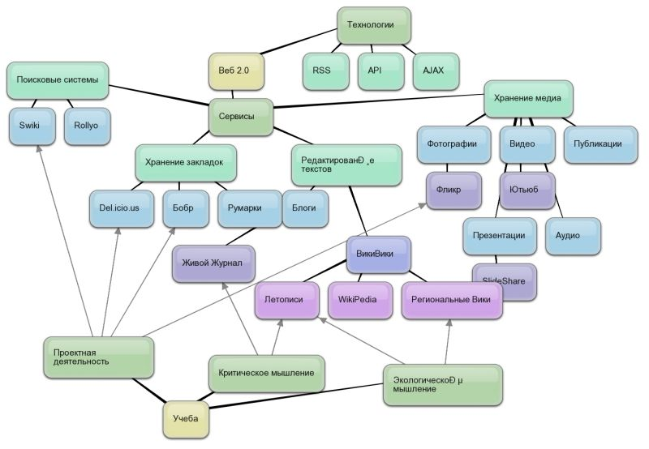
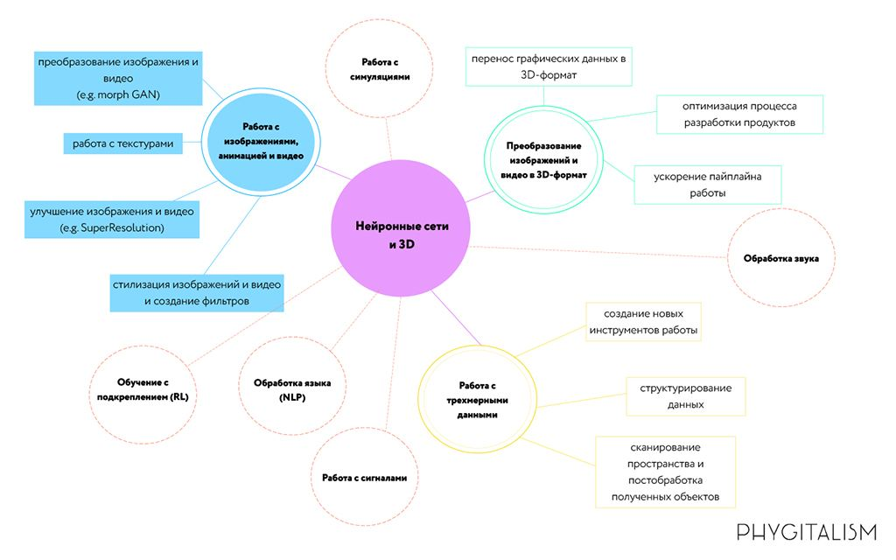

Классификация инструментов
Классификация инструментов
Классификация сервисов Веб 2.0

Здесь приведена классификация сервисов Веб 2.0 на май 2007 года. Статья об этих сервисах в Летописи постоянно видоизменяется и пополняется новыми ссылками:
Классификация социальных сервисовPhygital+Metaverse

Metaverse врывается в нашу жизнь, все вокруг о нём говорят, все ждут погружения в цифровое пространство. Но по-настоящему мы будем использовать метаверс-коммуникации только тогда, когда будет достаточно много цифрового контента и когда создавать его будет намного быстрее и дешевле, чем сейчас. Именно для этого мы разработали продукт Phygital+, который позволяет работать с 3D-данными и нейронными сетями в реал-тайме, комбинировать сети, легко и быстро импортировать в различные метаверс пространства — позволяет работать в со-творчестве CG художнику-дизайнеру и искусственному интеллекту. Уже сегодня используя этот инструмент мы сделали DeepFake в 4K всего на одной фотографии, создали контент для более чем 40 картин в дополненной реальности небольшой командой в небольшие сроки и реализовали проект, который был номинирован на Emmy.
© Курамшин Руслан Рафикович
2023 г.